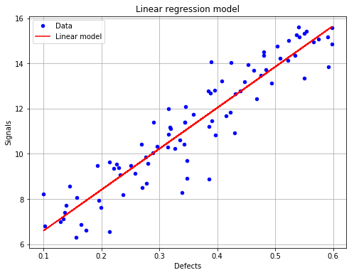
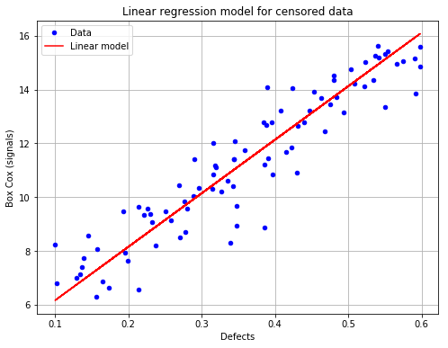

Linear model analysis with censored data¶
In [1]:
# import relevant module
import openturns as ot
import otpod
# enable display figure in notebook
try:
%matplotlib inline
except:
pass
/calcul/home/dumas/anaconda/lib/python3.6/site-packages/sklearn/ensemble/weight_boosting.py:29: DeprecationWarning: numpy.core.umath_tests is an internal NumPy module and should not be imported. It will be removed in a future NumPy release.
from numpy.core.umath_tests import inner1d
Generate data¶
In [2]:
N = 100
ot.RandomGenerator.SetSeed(123456)
defectDist = ot.Uniform(0.1, 0.6)
# normal epsilon distribution
epsilon = ot.Normal(0, 1.9)
defects = defectDist.getSample(N)
signalsInvBoxCox = defects * 43. + epsilon.getSample(N) + 2.5
# Inverse Box Cox transformation
invBoxCox = ot.InverseBoxCoxTransform(0.3)
signals = invBoxCox(signalsInvBoxCox)
Run analysis with Box Cox¶
In [3]:
noiseThres = 60.
saturationThres = 1700.
analysis = otpod.UnivariateLinearModelAnalysis(defects, signals, noiseThres,
saturationThres, boxCox=True)
Get some particular results¶
Result values are given for both analysis performed on filtered data (uncensored case) and on censored data.
In [4]:
print(analysis.getIntercept())
print(analysis.getR2())
print(analysis.getKolmogorovPValue())
[Intercept for uncensored case : 4.777, Intercept for censored case : 4.1614]
[R2 for uncensored case : 0.869115, R2 for censored case : 0.860722]
[Kolmogorov p-value for uncensored case : 0.477505, Kolmogorov p-value for censored case : 0.505919]
Print all results of the linear regression and all tests on the residuals¶
In [5]:
# Results are displayed for both case
print(analysis.getResults())
--------------------------------------------------------------------------------
Linear model analysis results
--------------------------------------------------------------------------------
Box Cox parameter : 0.18
Uncensored Censored
Intercept coefficient : 4.78 4.16
Slope coefficient : 18.15 19.94
Standard error of the estimate : 0.97 1.03
Confidence interval on coefficients
Intercept coefficient : [4.19, 5.36]
Slope coefficient : [16.63, 19.67]
Level : 0.95
Quality of regression
R2 (> 0.8): 0.87 0.86
--------------------------------------------------------------------------------
--------------------------------------------------------------------------------
Residuals analysis results
--------------------------------------------------------------------------------
Fitted distribution (uncensored) : Normal(mu = 7.65671e-16, sigma = 0.968046)
Fitted distribution (censored) : Normal(mu = -0.0237411, sigma = 0.998599)
Uncensored Censored
Distribution fitting test
Kolmogorov p-value (> 0.05): 0.48 0.51
Normality test
Anderson Darling p-value (> 0.05): 0.06 0.08
Cramer Von Mises p-value (> 0.05): 0.07 0.09
Zero residual mean test
p-value (> 0.05): 1.0 0.83
Homoskedasticity test (constant variance)
Breush Pagan p-value (> 0.05): 0.69 0.71
Harrison McCabe p-value (> 0.05): 0.6 0.51
Non autocorrelation test
Durbin Watson p-value (> 0.05): 0.43 0.48
--------------------------------------------------------------------------------
Save all results in a csv file¶
In [6]:
analysis.saveResults('results.csv')
Show graphs¶
The linear regression model with data for the uncensored case (default case)¶
In [7]:
# draw the figure for the uncensored case and save it as png file
fig, ax = analysis.drawLinearModel(name='figure/linearModelUncensored.png')
fig.show()
/calcul/home/dumas/anaconda/lib/python3.6/site-packages/matplotlib/figure.py:459: UserWarning: matplotlib is currently using a non-GUI backend, so cannot show the figure
"matplotlib is currently using a non-GUI backend, "

The linear regression model with data for the censored case¶
In [8]:
# draw the figure for the censored case and save it as png file
fig, ax = analysis.drawLinearModel(model='censored', name='figure/linearModelCensored.png')
fig.show()
/calcul/home/dumas/anaconda/lib/python3.6/site-packages/matplotlib/figure.py:459: UserWarning: matplotlib is currently using a non-GUI backend, so cannot show the figure
"matplotlib is currently using a non-GUI backend, "

In [ ]:
In [ ]: